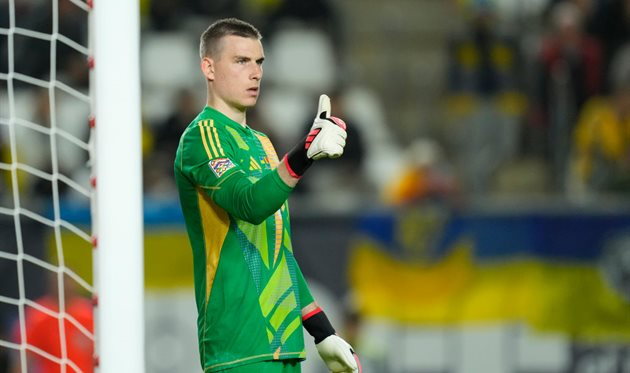

Explore the Modern Connected Risk Platform
Built to provide the efficiency, connectedness, and visibility you need to stay ahead of today’s dynamic risk environment.

Risk Management
The gradual accumulation of information about

Compliance Management
The gradual accumulation of information about
SOX Management
The gradual information about atomic behaviour...

Internal Audit Streamlined
The gradual accumulation of information about
Лунін може перейти в Мілан — ЗМІ
Все залежить від рішення Меньяна.
 Воротар мадридського Реала Андрій Лунін влітку може приєднатися до італійського Мілану. Про це повідомляє Spazio Milan.Основний голкіпер Мілана Майк Меньян досі не продовжив контракт з Міланом, який спливає 30 червня 2026 року, тому його майбутнє в італійському клубі оповите туманом.
За інформацією джерела, керівництво "россонері" шукає воротарів для потенційної заміни французу. Пріоритетним варіантом є Люка Шевальє з Лілля.
Також повідомляється, що Мілан розглядає можливість трансферу українського воротаря мадридського Реала Андрія Луніна. В свою чергу "королівський" клуб готовий розглянути пропозицію по Луніну у літнє трансферне вікно.
Цього сезону Андрій Лунін провів за Реал десять матчів, пропустив тринадцять м'ячів та чотири рази відіграв "на нуль".